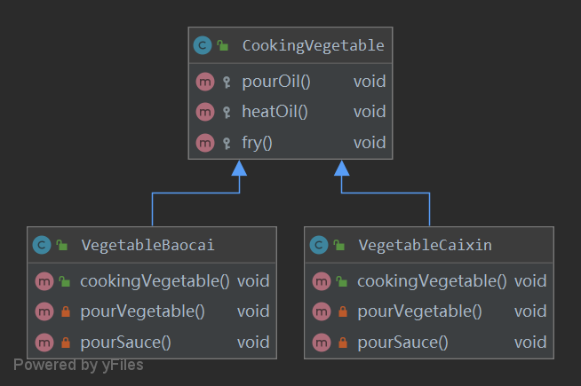
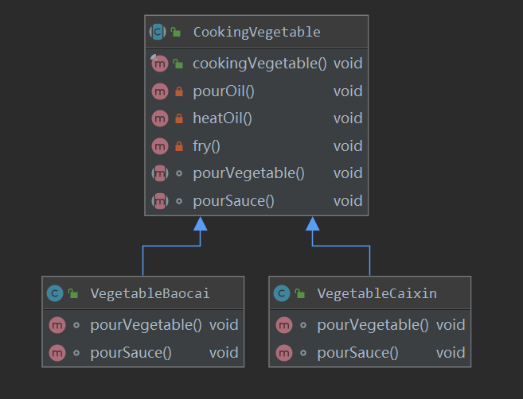
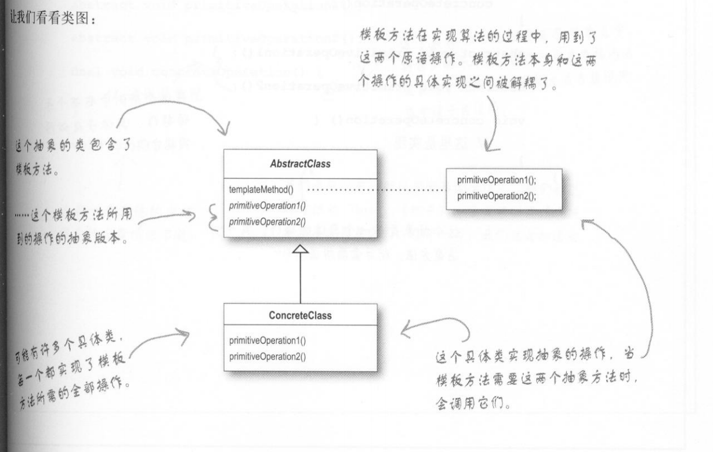

动机
在软件构建过程中，对于某一项任务，它常常有稳定的整体操作结构，但各个子步骤却有很多改变的需求，或者由于固有的原因（比如框架与应用之间的关系）而无法和任务的整体结构同时实现。
如何在确定稳定操作结构的前提下，来灵活应对各个子步骤的变化或者晚期实现需求？
实例
小明希望学炒菜：手撕包菜 & 蒜蓉炒菜心。炒菜的流程分为5步，对每种菜来说，炒菜的流程都是一样的。
- 倒油
- 热油
- 倒蔬菜
- 倒调味料
- 翻炒
其中，倒油、热油、翻炒三步操作对各个菜都是一样的，而倒蔬菜、倒调味料两步对各种菜之间是有差异的。
对于这个问题，最直接的想法是分别建立“手撕包菜”、“蒜蓉炒菜心”两个类，在两个类里实现这5个方法，代码如下所示1
2
3
4
5
6
7
8
9
10
11
12
13
14
15
16
17
18
19
20
21
22
23
24
25
26
27
28
29
30
31
32
33
34
35
36
37
38
39
40
41
42
43
44
45
46
47
48
49
50
51
52
53
54
55
56
57
58
59public class VegetableBaocai {
public void cookingVegetable() {
this.pourOil();
this.heatOil();
this.pourVegetable();
this.pourSauce();
this.fry();
}
private void pourOil() {
System.out.println("倒油");
}
private void heatOil() {
System.out.println("热油");
}
private void fry() {
System.out.println("翻炒");
}
private void pourVegetable() {
System.out.println("下锅的蔬菜是包菜");
}
private void pourSauce() {
System.out.println("下锅的酱料是辣椒");
}
}
public class VegetableCaixin {
public void cookingVegetable() {
this.pourOil();
this.heatOil();
this.pourVegetable();
this.pourSauce();
this.fry();
}
private void pourOil() {
System.out.println("倒油");
}
private void heatOil() {
System.out.println("热油");
}
private void fry() {
System.out.println("翻炒");
}
private void pourVegetable() {
System.out.println("下锅的蔬菜是菜心");
}
private void pourSauce() {
System.out.println("下锅的酱料是蒜蓉");
}
}
这样做的缺点也很明显：代码中存在大量重复的部分，两个类除了pourVegetable()方法和pourSauce()方法外都相同。
既然有重复部分，那么我们可以将重复部分抽离出来，放进一个基类(CookingVegetable)中。
一种直观的想法是，将倒油、热油、翻炒这三个方法放到基类中。代码如下
1 | public class CookingVegetable { |
这种实现方式的类图如下所示

这种实现比上一种好了很多，但是还是有重复，重复的地方在于两个子类有完全一样的cookingVegetable()方法，这就会出现两个问题。
- 假设现在又增加了两种菜：番茄炒蛋、红烧茄子，那么这两个类也都要包含cookingVegetable()方法。
- 假设cookingVegetable()方法有变动，在fry()步骤之后新增一个清洗(clean)步骤，那么每个炒菜类的cookingVegetable()方法都要加上clean()方法。
既然各子类的cookingVegetable()方法，那么有办法将这个方法也抽象化吗？这就引出了模板方法模式。
我们将cookingVegetable()方法提取出来放到基类中，由于该方法中，pourOil(), heatOil(), fry()三个子方法对不同子类都是一样的，那么我们直接在基类中实现它们，让子类去调用基类的方法；pourVegetable(), pourSauce()这两个方法是各不相同的，我们可以在基类中声明它们，让各个子类去单独实现，也就是抽象方法。其类图如下

基类的代码如下所示
1 | public abstract class CookingVegetable { |
各个子类去实现上面两个抽象方法，代码如下1
2
3
4
5
6
7
8
9
10
11
12
13
14
15
16
17
18
19
20
21
22
23public class VegetableBaocai extends CookingVegetable {
void pourVegetable() {
System.out.println("下锅的蔬菜是包菜");
}
void pourSauce() {
System.out.println("下锅的酱料是辣椒");
}
}
public class VegetableCaixin extends CookingVegetable {
void pourVegetable() {
System.out.println("下锅的蔬菜是菜心");
}
void pourSauce() {
System.out.println("下锅的酱料是蒜蓉");
}
}
下面测试一下，分别建立包菜、菜心两个类进行测试1
2
3
4
5
6
7
8
9
10
11public class Test {
public static void main(String[] args) {
// 手撕包菜
VegetableBaocai baocai = new VegetableBaocai();
// 蒜蓉菜心
VegetableCaixin caixin = new VegetableCaixin();
baocai.cookingVegetable();
System.out.println("================");
caixin.cookingVegetable();
}
}
输出如下
1 | 倒油 |
以上便是模板方法模式的一个实例
模式定义
模板方法模式定义了一个操作中的算法的骨架（稳定），而将一些步骤（会变化的步骤）延迟到子类中。模板方法模式使得子类可以不改变一个算法的骨架即可重定义（override重写）该算法的某些特定步骤。
在上面的例子中，cookingVegetable()方法可以看作一个算法，该算法的骨架包含5个步骤：倒油、热油、倒蔬菜、倒调味料、翻炒。有两个步骤（倒蔬菜、倒调味料）根据子类的不同实现起来也不同，因此这两个方法的实现延迟到子类中。

要点总结
- 模板方法模式是一种非常基础性的设计模式，在面向对象系统中有着大量的应用，它用最简洁的机制（虚函数的多态性）为很多应用程序框架提供了灵活的扩展点，是代码复用的基本实现结构。
- 除了可以灵活应对子步骤的变化外，“不要调用我，让我来调用你”的反向控制结构是模板方法模式的典型应用。
- 在具体实现方面，被模板方法模式调用的虚方法可以具有实现，也可以没有任何实现（抽象方法），但一般推荐将它们设置为protected方法。